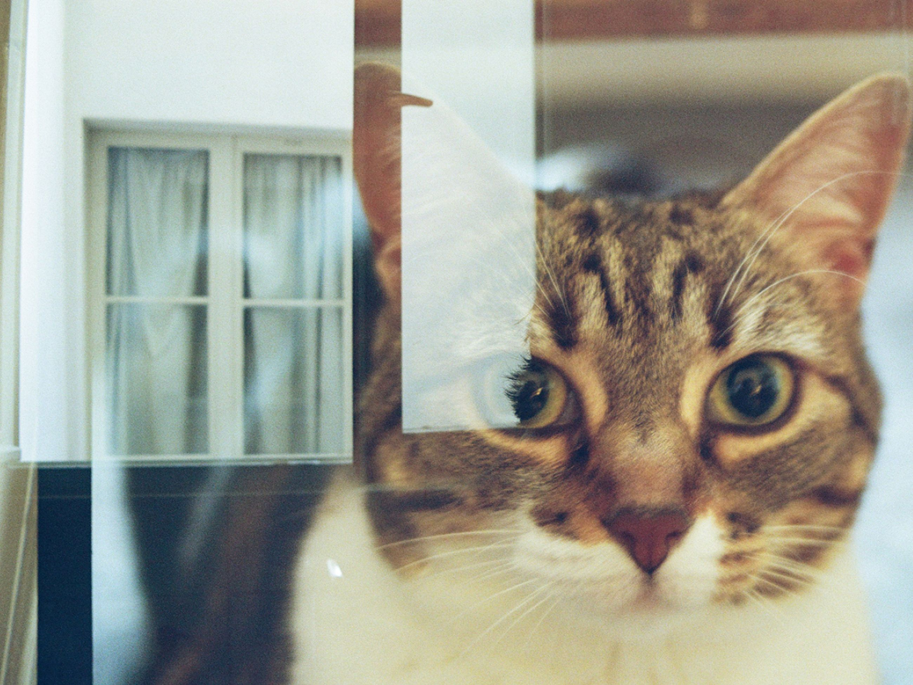
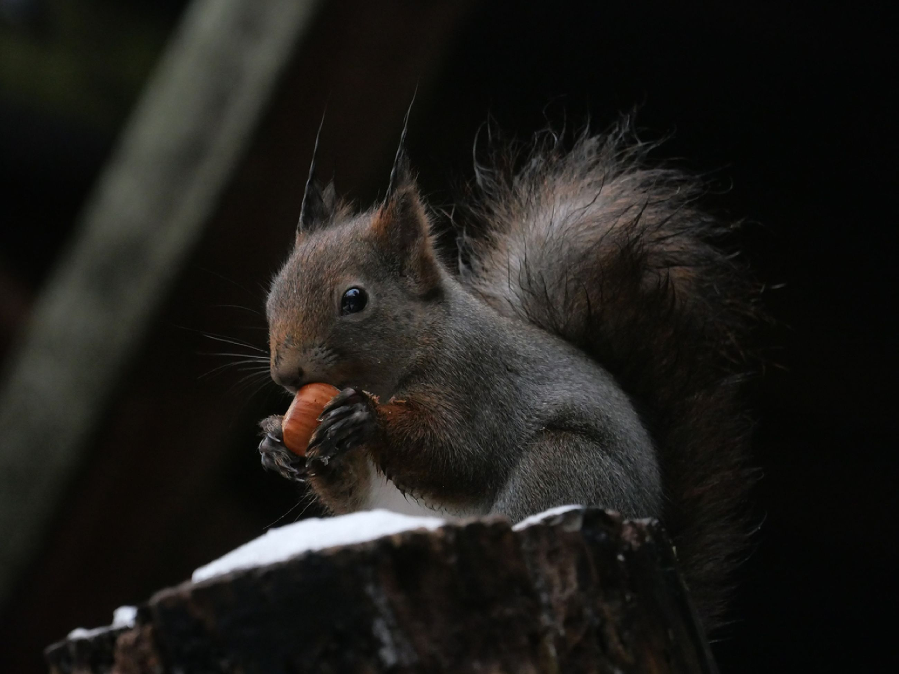
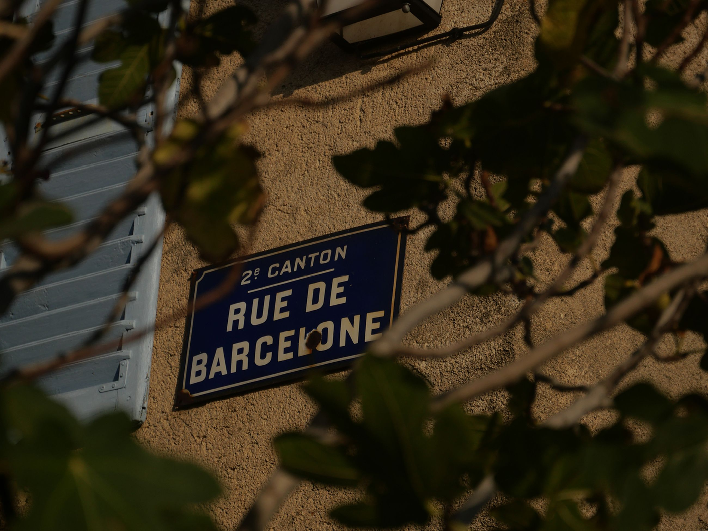
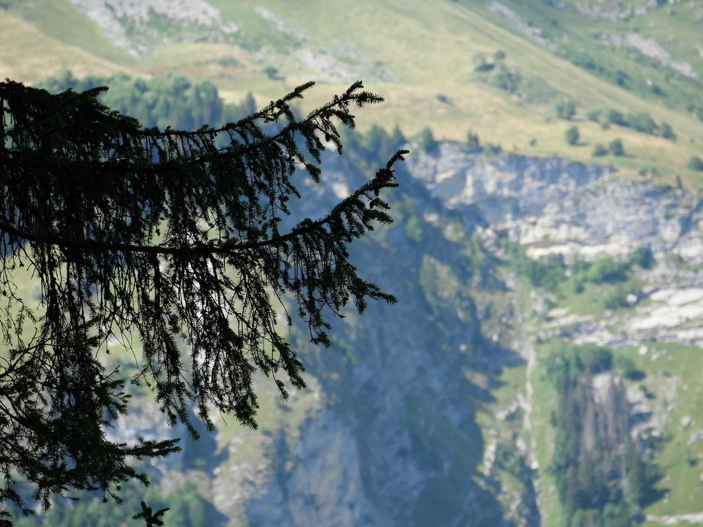

Les moments de vie sur le vif et les zooms font partie de ce que j’expérimente régulièrement. Ces réalisations faites durant l’année m’ont permise de lâcher prise sur ma pratique et mon observation autour de ce domaine : la photographie.
Avoir l’oeil et être précise sont des atouts qui m’accompagnent dans la création.



